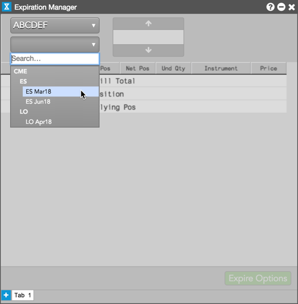
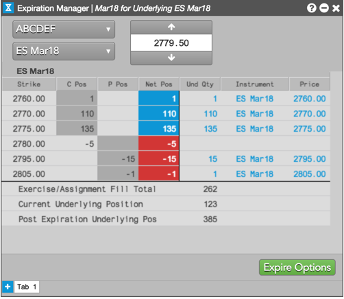
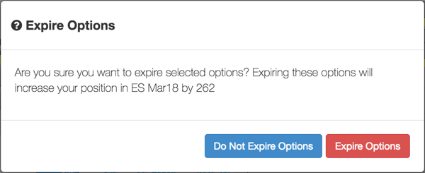

IMPORTANT: Ensure that you expire your options before your daily position reset time. The position in your account will reset at either the exchange reset time or at a time set by your risk administrator. To extend your position reset time, contact your administrator.
To expire options positions:
Only accounts with open options positions are displayed. Expiries for instruments with open options positions in the selected account are displayed in the dropdown.

After selecting an expiry, the last traded price for the underlying futures instrument is displayed (e.g., 2779.50). Based on this price, Expiration Manager shows your open options positions, as well as your current underlying position and projected post expiration underlying position. In-the-money calls and puts are shaded in the C Pos and P Pos columns.

Note: If the underlying matches the strike price, neither the call or put is deemed in the money and neither column cell will be highlighted.
Expiration Manager updates your positions and in-the-money calls and puts based on the underlying futures price that is entered.
After reviewing your expiring options and positions, click Expire Options.
CAUTION: You cannot undo the expiration process using the widget. Review your positions before confirming the expiration of your options.
To confirm, click Expire Options in the confirmation screen. To cancel and return to the Expiration Manager, click Do Not Expire Options.

After you click Expire Options, the in-the-money options are expired into the underlying futures instrument and your open position is automatically modified. Position modification is displayed in the Audit Trail.